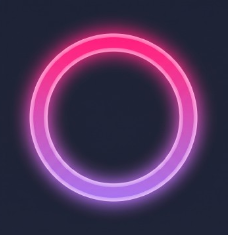
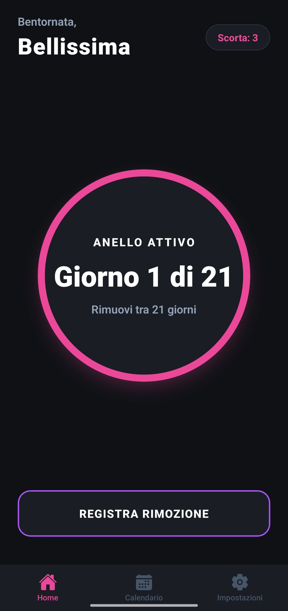

RingSync
App per il tracciamento dell'anello anticoncezionale Contraceptive ring tracking app
Il Progetto The Project
RingSync è un'applicazione mobile sviluppata per tracciare con precisione millimetrica l'inserimento e la rimozione dell'anello anticoncezionale.
Il focus principale dell'app è la Privacy: non utilizza alcun server o database in cloud. Tutti i dati medici e sensibili vengono salvati esclusivamente in locale sul dispositivo tramite AsyncStorage, supportati da un sistema di notifiche locali. È stata inoltre implementata una "Modalità Discreta" per mascherare i testi delle notifiche, garantendo all'utente la massima riservatezza in ogni momento.
RingSync is a mobile application developed to track contraceptive ring insertion and removal with millimeter precision.
The app's main focus is Privacy: it doesn't use any cloud servers or databases. All sensitive medical data is saved exclusively locally on the device via AsyncStorage, supported by a local notification system. A "Discrete Mode" has also been implemented to mask notification texts, ensuring maximum privacy for the user at all times.
Tech Stack
- React Native (Expo)
- TypeScript
- Expo Notifications
- AsyncStorage

Sfide Tecniche Technical Challenges
Notifiche Infallibili Flawless Notifications
Superamento dei limiti Android calcolando i trigger in secondi esatti invece del calendario di sistema. Overcoming Android limits by calculating triggers in exact seconds instead of system calendar.
Privacy First
Nessun database in cloud. Archiviazione isolata sul device per la massima sicurezza dei dati medici. No cloud database. Isolated storage on the device for maximum medical data security.
Calendario Generativo Generative Calendar
Algoritmo matematico che renderizza dinamicamente i cicli di copertura e pausa su componenti React Native. Mathematical algorithm that dynamically renders coverage and pause cycles on React Native components.